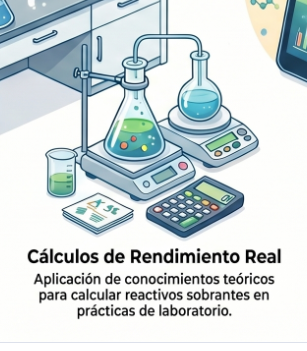

Guía de Cálculos (Paso a Paso)
Para obtener el rendimiento y analizar los sobrantes, debéis seguir este esquema:
Paso A: Determinar las masas iniciales
Masa de NaHCO3 = 5 g.
Masa de Vinagre = (Masa matraz + vinagre) - (Masa matraz vacío).
Nota: Debes conocer la riqueza del vinagre (normalmente 6 g de ácido acético por cada 100 ml).
Paso B: Calcular los moles de reactivos
Usando las masas moleculares (M):
n(NaHCO3)=masa / Masa Molecular
n(CH3COOH)=moles presentes en los 50 ml utilizados
Paso C: Identificar el Reactivo Limitante y el Sobrante
Como la estequiometría es 1:1, el reactivo que tenga menos moles será el limitante (el que se gasta primero). El otro será el reactivo sobrante.
Cálculo del sobrante: Moles iniciales del que sobra - Moles del limitante.
Paso D: Rendimiento de la Reacción
Masa Teórica de CO2: Calcula cuántos gramos de CO2 deberían haberse formado a partir del reactivo limitante.
Masa Real de CO2: Es la masa que se "perdió" durante el experimento: Masa Real=(Masa inicial de todo)−(Masa final tras la reacción)
Cálculo del % de Rendimiento: Rendimiento=(Masa Teórica / Masa Real)×100